WSDP & Tomcat 安裝指南
Java 在伺服器的程式設計上有著先進的技術架構，因此使用 Java 做為伺服器系統的開發工具是最佳的選擇之一。而要建立 Java 的伺服器開發平台很簡單，只要安裝 WSDP 並整合 Tomcat，即能擁有豐富的先進技術資源讓你受用不盡。
WSDP 是 Web Services Developer Pack 的縮寫，中文可譯為「網路服務開發套件」；這是 Java 針對 Web Services 所推出的技術支援。Web Services 是一種以 XML 做為主要架構的網路技術規格，在未來 XML 格式的資料會成為各種平台、系統、軟體間的標準，因此使用 Web Services 規格所發展出來的程式，是一種標準化的解決方案。
另外，WSDP 可將 Tomcat 整合進來，這是一套支援 Servlet 與 JSP 的 HTTP 網路伺服器系統。當你的電腦啟動這套系統，就立刻成為一台網路伺服器，並且可以使用 JSP 的強大語法功能，在最簡易的程式下快速產生強效的動態網頁功能。
Java + WSDP + Tomcat 是讓人津津樂道的組合，它能讓你程式的應用領域更為廣泛，一次跨足網頁伺服端設計與應用程式設計，解決更多的資訊需求。讓我們一起來體驗吧。
下載 JWSDP 與 Tomcat
請連線到 Java Technology 網站，在 Java Web Services 主題的網頁裡尋找 JWSDP 的下載。此外，JWSDP 裡面還有 Containers 的項目，裡面提供 Tomcat 的下載。
你可以參考如下 JWSDP 1.6 的檔名，確認是否下載正確： (依版本序號的不同檔名會有差異)
Windows
jwsdp-1_6-windows-i586.exe
Linux
jwsdp-1_6-unix.sh
Tomcat 的話不分平台，下載回來的檔案在 Windows 和 Linux 都可使用：
tomcat50-jwsdp.zip
安裝 JWSDP + Tomcat
首先請安裝好 JDK 並設定好 JAVA_HOME 與 PATH 等環境變數。
再來，先將 Tomcat 解壓縮，然後將 tomcat50-jwsdspan 資料夾移至你理想的目錄位置存放，在 JWSDP 的安裝過程中，我們會需要指定這個目錄位置來讓 Tomcat 整合進來。建議 Tomcat 的存放位置…
Windows：C:\Program Files\Sun\jwsdp-1.6\tomcat50-jwsdp
Linux：/opt/jwsdp-1.6/tomcat50-jwsdp
然後執行 JWSDP 展開安裝程序。Windows 只要點兩下下載回來的安裝檔即可進入安裝過程。Linux 的話請開啟終端機模式，用指令將目錄切換到檔案所在處，輸入：「./jwsdp-1_6-unix.sh」即可進入安裝程序。
JWSDP 的安裝需要幾項額外設定，無法一直按「下一步」完成，因此底下將逐步介紹安裝過程，希望能協助網友們的安裝。
雖然這裡是以 Linux 作業系統的安裝過程來做圖解，但其實在 Windows XP 作業系統的安裝過程大同小異，下面的內容一樣適用。
步驟 1
執行 JWSDP，首先會出現命令提示字元的安裝程序：
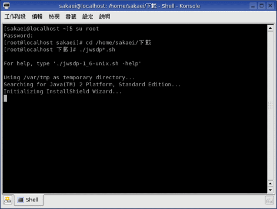
執行在命令提示字元的程序會檢查系統中是否安裝 JDK 1.4 或 JDK 5.0，請稍候數許分鐘等待處理。
步驟 2
若系統安裝的 JDK 通過驗證，會正式展開安裝程序。首先是歡迎畫面：
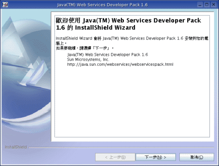
請直接按「下一步」。
步驟 3
接著是授權合約：
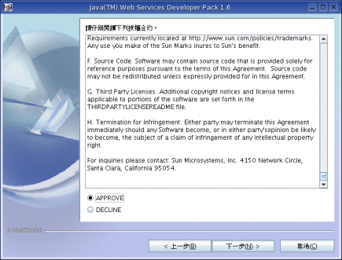
你必須按 APPROVE 表示同意裡面的條款，才能按「下一步」鈕繼續下一個安裝步驟。
當你同意安裝這套軟體，就表示你必須遵從合約內容的條例，因此請詳細閱讀以確保自己的權益。
步驟 4
接著是指定要做為 JWSDP 使用的 Java 程式引擎：
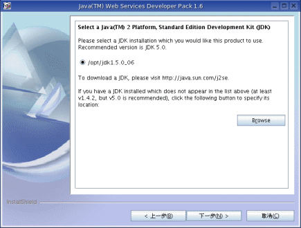
如果畫面出現 None found，表示沒有發現可做為 Java 程式引擎的 JDK。這時請按 Browse 鈕自行選擇 JDK 的安裝位置。
完成後請按「下一步」進行下一個安裝步驟。
步驟 5
接下來的安裝步驟用來整合 Containers。
JWSDP 可以整合使用的 Containers 有很許多種，在這裡我們要整合的是 Tomcat。請按 Browse 鈕：
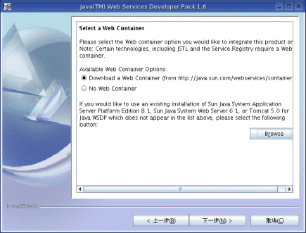
然後會跳出對話視窗用來選擇 Tomcat，由於先前已把下載回來的 Tomcat 解壓縮到 opt/jwsdp-1.6/tomcat50-jwsdspan 或 D:\Program Files\Sun\jwsdp-1.6\tomcat50-jwsdp，因此就在這對話視窗中選擇這目錄的位置。如下：
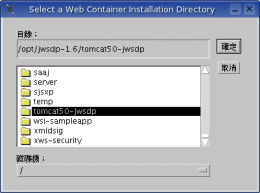
動作無誤的話，畫面會增加新的選項，也就是 Tomcat 的所在目錄：
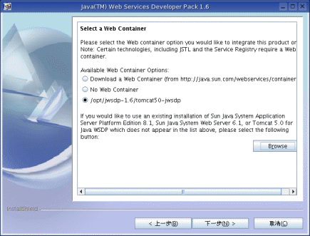
選擇剛剛加入的項目，然後按「下一步」。
步驟 6
接下來請選擇 JWSDP 的安裝路徑：
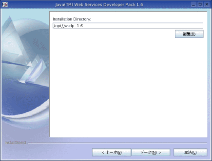
為了方便管理，建議將 JWSDP 安裝到 /opt/jwsdp-1.6 或 C:\Program Files\Java\jwsdp-1.6。
步驟 7
接著選擇安裝的方式為典型 (Typical) 或自訂：
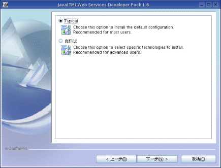
使用 Typical 的安裝方式即可，請直接按「下一步」。
步驟 8
接著要建立 Tomcat 的管理帳戶，請設定一個使用者帳號以及密碼，然後按「下一步」：
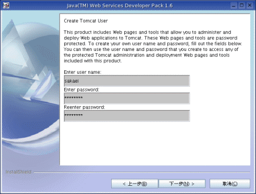
步驟 9
然後要求設定代理伺服器，直接按「下一步」即可。
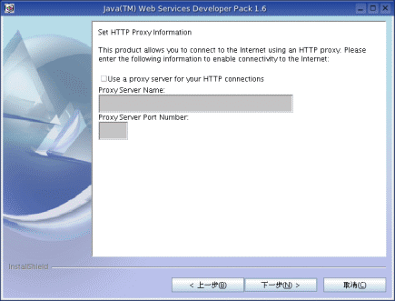
步驟 10
接著會將安裝設定的結果顯示出來，確認後直接按「下一步」即可：
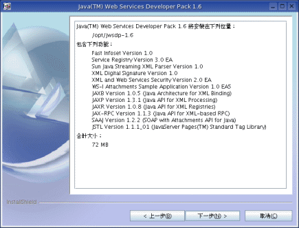
步驟 11
完成一連串的安裝設定後，終於開始將 JWSDP 安裝到電腦。請稍候數分鐘。
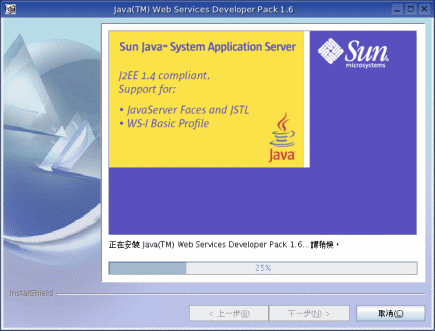
安裝完成會出現如下畫面：
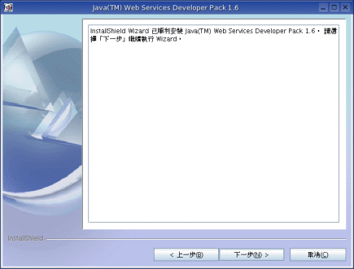
請按「下一步」。
步驟 12
接下來的畫面是告知使用 JDK 1.4 的人，請將 JWSDP 的 JAXP 設定到 CLASSPATH：
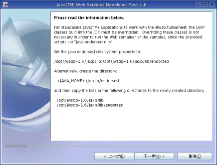
因為 JDK 1.4 的 JAXP 版本為 1.1，功能上不符合使用，因此建議使用 JWSDP 的 JAXP。
步驟 13
接著要求註冊：
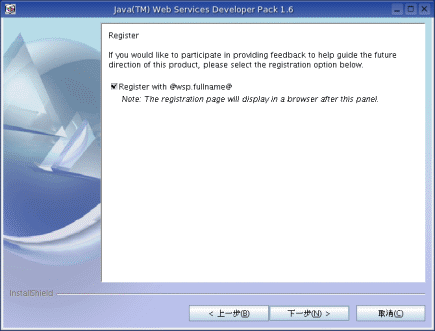
步驟 14
最後直接按「完成」結束整個安裝過程。
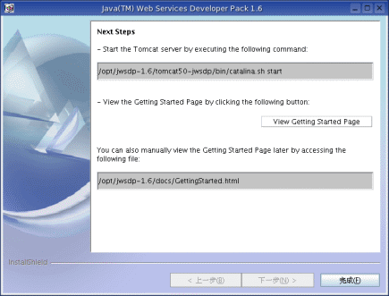
後續設定
安裝好之後，建議在環境變數加入幾項設定。
Windows
變數名稱：CATALINA_HOME
變數值：D:\Program Files\Java\jwsdp-1.6\tomcat50-jwsdp
變數名稱：CLASSPATH
變數值：%CATALINA_HOME%\common\lib\servlet.jar
Linux
CATALINA_HOME="$PATH:/opt/jwsdp-1.6/tomcat50-jwsdp"
CLASSPATH="$CATALINA_HOME/common/lib/servlet.jar"
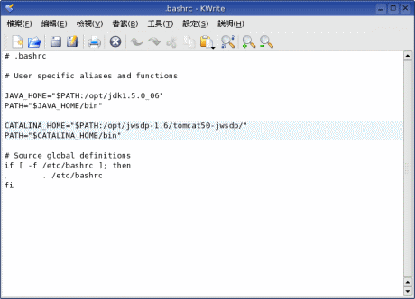
環境變數的建立與設定，跟我們安裝 JDK 之後自行設定 JAVA_HOME 系統變數的做法是相同的，請參考《Windows XP 的 JDK 安裝指南》 中「設定環境變數」一節的介紹。
啟動 Tomcat 伺服器
Windows
請依序點選：
開始 → Sun Microsystems → Java(TM) Web Services Developer Pack 1.6 → Start Tomcat
Linux
請輸入如下指令執行：
/opt/jwsdp-1.6/tomcat50-jwsdp/bin/catalina.sh start
然後在瀏覽器輸入網址 http://127.0.0.1:8080 即可測看看是否正常執行：
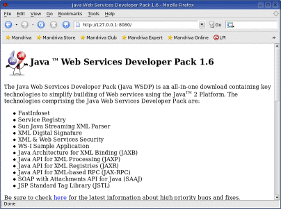